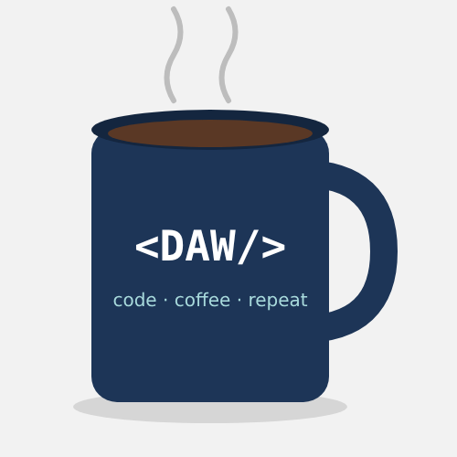

Taza <DAW/>
Precio: 15,99 € 11,99 €
Taza de cerámica de 350 ml para programadores, con el diseño <DAW/> y el lema code, coffee, repeat. Apta para microondas y lavavajillas.

Precio: 15,99 € 11,99 €
Taza de cerámica de 350 ml para programadores, con el diseño <DAW/> y el lema code, coffee, repeat. Apta para microondas y lavavajillas.